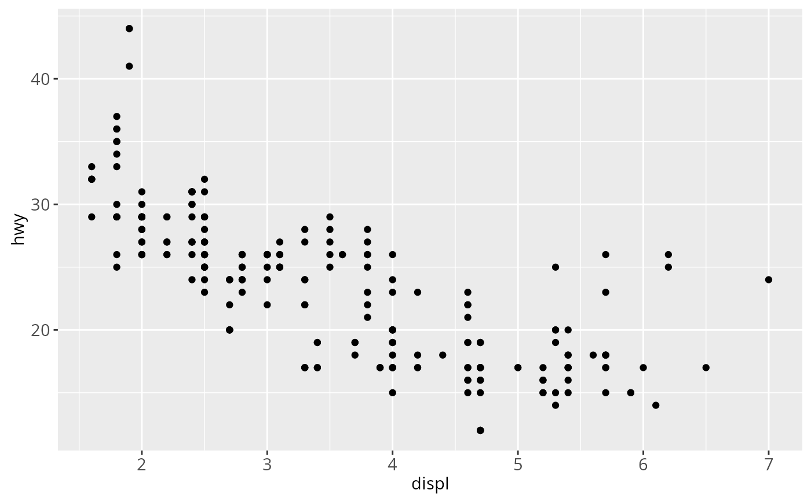

Generate aesthetic mappings that describe how variables in the data are mapped to visual properties (aesthetics) of geoms. This function also standardise aesthetic names by performs partial name matching, converting color to colour, and old style R names to ggplot names (eg. pch to shape, cex to size)
See also
See aes_q/aes_string for standard
evaluation versions of aes.
See
aes_colour_fill_alpha,
aes_linetype_size_shape and aes_position
for more specific examples with different aesthetics.
Examples
aes(x = mpg, y = wt)
#> * x -> mpg
#> * y -> wt
aes(mpg, wt)
#> * x -> mpg
#> * y -> wt
# You can also map aesthetics to functions of variables
aes(x = mpg ^ 2, y = wt / cyl)
#> * x -> mpg^2
#> * y -> wt/cyl
# Aesthetic names are automatically standardised
aes(col = x)
#> * colour -> x
aes(fg = x)
#> * colour -> x
aes(color = x)
#> * colour -> x
aes(colour = x)
#> * colour -> x
# aes is almost always used with ggplot() or a layer
ggplot(mpg, aes(displ, hwy)) + geom_point()

ggplot(mpg) + geom_point(aes(displ, hwy))
 # Aesthetics supplied to ggplot() are used as defaults for every layer
# you can override them, or supply different aesthetics for each layer
# Aesthetics supplied to ggplot() are used as defaults for every layer
# you can override them, or supply different aesthetics for each layer